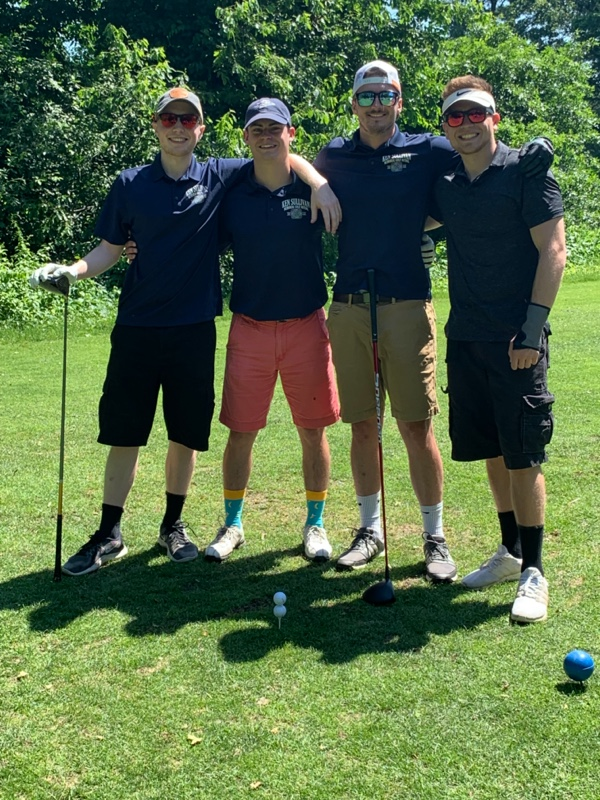
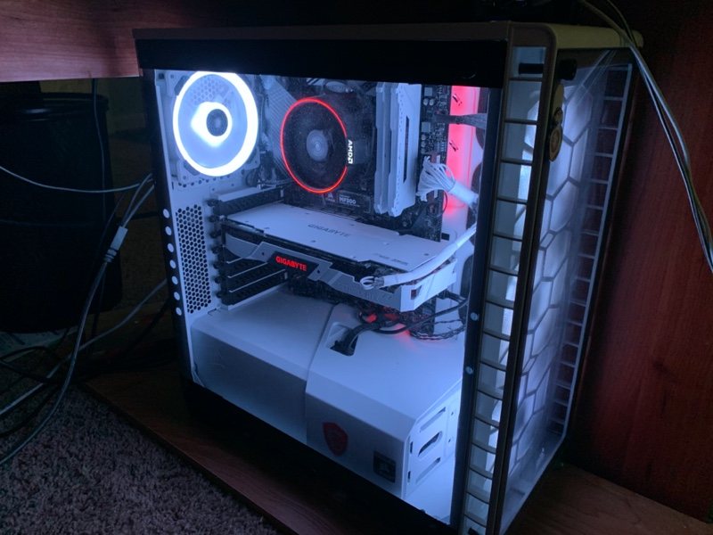
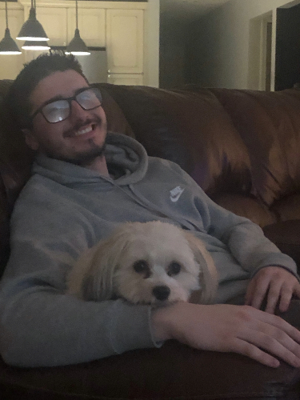

|
---- | |
---- | |
---- | |
|---|
This page is dedicated to telling you who I am outside of programming. My name is Kenneth Sullivan.
I am currently entering my thrid year as a URI student. I am also currently a Mechanical Engineering Major but I am
plannig on switching my major to computer science. I am from Hudson, Massachusetts where I have lived all of my life.
I enjoy playing video games on my computer and watching tv as well as hanging out with my friends.
|  |  |  |
|---|